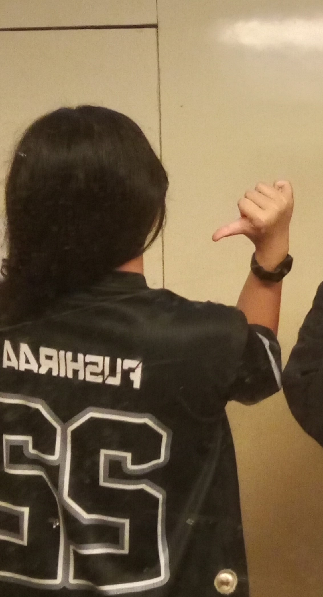

Alamat: Matani 2, Tomohon Tengah, Sulawesi Utara
Email: aresstacmvhponto@gmail.com
Phone: 081234567890
LinkedIn: www.linkedin.com/in/aressta-mutiara-christiani22Hi! I'm Aressta Mutiara Christiani Ponto, a passionate and dedicated student currently pursuing a Bachelor's degree in Applied Computer Science at Politeknik Negeri Manado. With a strong foundation in computer science and a keen interest in technology, I am eager to contribute my skills and knowledge to the field. I am committed to continuous learning and growth, and I am excited about the opportunities that lie ahead in my academic and professional journey.